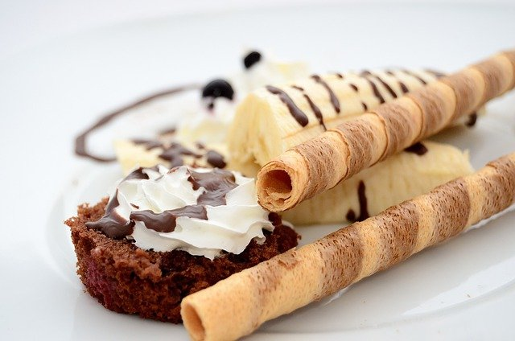
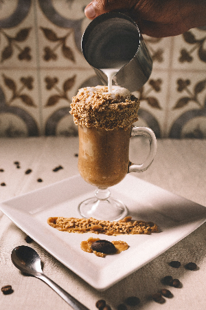
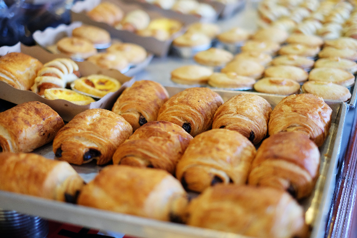

Tudo começou em 1964, quando o imigrante português Thiago Cabreira deixou sua terra natal, sua esposa Bruna Janke e veio para o Brasil. Durante um ano trabalhando na panificadora de sua mãe Dalila Cabreira, Thiago Vieira economizou, com muita determinação, esforço e um grande sonho, construiram a Panificadora Cabreira - Pão Quentinho em 1966. Por anos a qualidade e o sabor especial de suas receitas cativaram o bairro e fizeram da padaria uma referência de qualidade da região de Pelotas e hoje seus filhos e netos continuam em frente, levando seu legado adiante com a mesma tradição deixada pelo seu pai.
|  |
A banana split ou banana-rachada é uma sobremesa servida à base de sorvete e banana. R$ 15,00 |
|
O café é uma bebida produzida a partir dos grãos torrados do fruto do cafeeiro. R$ 20,00 |
 |
|  |
Os folhados são um tipo de pastéis salgados feitos com massa folhada, em geral assados ou fritos, com diversos tipos de recheios R$ 30,00 |